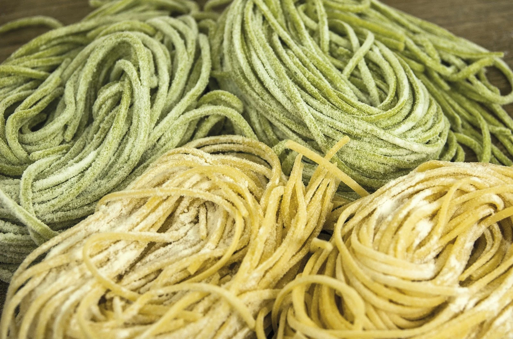
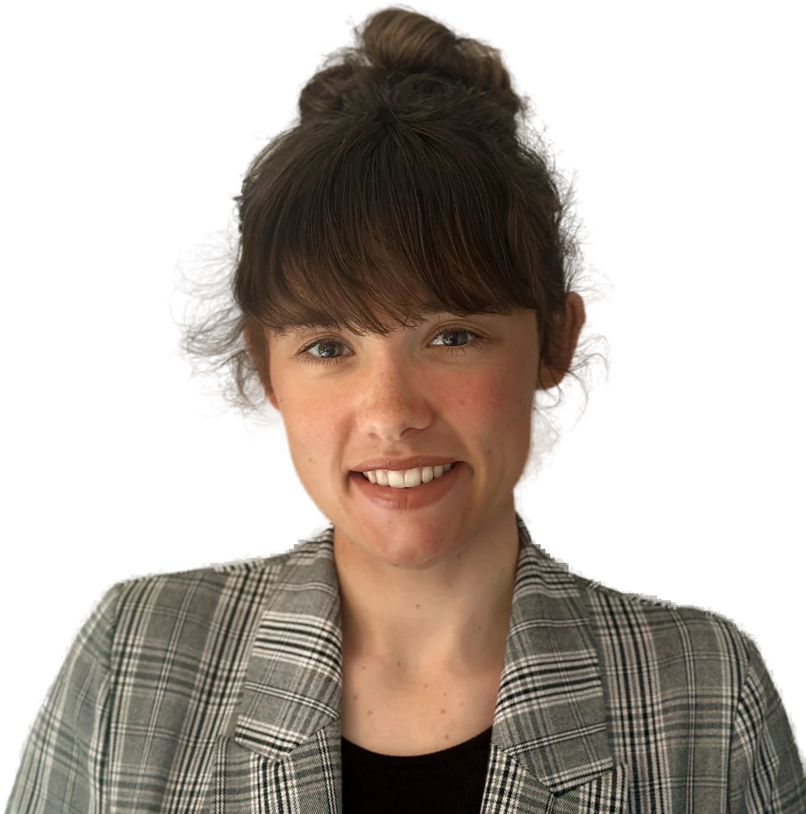
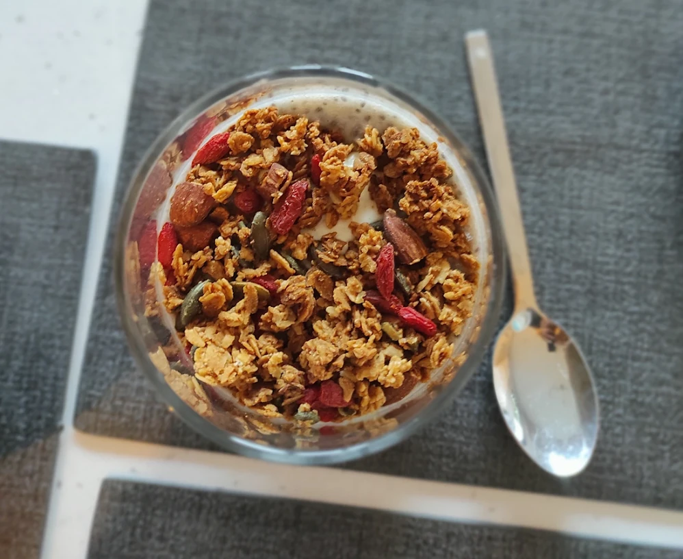

PERSONALIZED NUTRITIONAL PLAN FOR YOU TO IGNITE YOUR POTENTIAL
Whether you are looking to clean up your diet, to boost your energy levels & performance, to manage your weight, to boost your immune system, to improve your relationship to food or simply seeking general guidance on nutrition, VIVIFY SPORTS is here to help.
BOOK YOUR CONSULTATION BELOW
The consultation is scheduled at a time that suits you, and can be done from the comfort of your own home.
You will receive a full, in-depth report of Marine’s observations, so you understand exactly what your body needs to train, race and recover at your best.
Marine then builds your personalised performance nutrition plan, adapted to your training load, your goals and your physiology.
You get practical advice on what to eat and when: your daily meals and macros, fuelling before, during and after training, hydration, and supplements only where you need them.
You also have the option of booking multiple sessions to ensure you can layer feedback and monitoring over a longer time period, to amplify results.


WHAT’S COVERED
By assessing your dietary patterns, relationship to food, macronutrient & micronutrient balance, VIVIFY SPORTS will give you tailored solutions to reach your goals. Particularly looking into:
- Macronutrients requirements
- Vitamins & Minerals requirements
- Supplements requirements
- Sports specific requirements
- Lifestyle advice
- Healthy recipes
- Craving control guidelines
- Weekly macro plan based on your training load
- Food diary analysis and feedback
- Gut health, IBS & gastro-intestinal issues
- Race & event fuelling strategy
- Gut training for race-day fuelling
- Weight management & body composition
- Recovery nutrition
NUTRITION IN YOUR COACHING
Train like a pro, with everything in one place. Add nutrition coaching with Marine to your Cigala Cycling coaching: she works from the same calendar as your coach, so your training and your nutrition are planned together.
One calendar
Your nutrition sits next to your training in Vekta or TrainingPeaks: your daily macros (carbohydrates, protein and fat), written for the sessions you are doing that day.
Planned from your training load
Marine sees your calendar, training load and sessions, and adjusts your plan as the training changes: more carbs on the big days, less on the easy ones.
Food diary review
Log what you eat in MyFitnessPal. Marine reviews your food diary and sends you suggestions.
Race & event fuelling
A fuelling strategy for each race, built from your Critical Power and the demands of the event, with gut training so your stomach can take it on the day.
Post-ride recovery bowl
Serves 1 · 15 minutes
Approx. 85 g carbs · 50 g protein · 19 g fat
Ingredients
- 100 g basmati rice (dry weight)
- 150 g chicken breast
- 1 small sweet pepper and a handful of spinach
- 1 tbsp olive oil
- Lemon, salt, pepper, paprika
Method
- Cook the rice.
- Slice the chicken, season with paprika and pan-fry in the olive oil for 6–8 minutes.
- Add the pepper and spinach for the last 2 minutes, then serve on the rice with a squeeze of lemon.
Pre-ride overnight oats
Serves 1 · 5 minutes, the night before
Approx. 115 g carbs · 35 g protein · 13 g fat
Ingredients
- 80 g rolled oats
- 250 ml milk
- 150 g Greek yoghurt
- 1 banana
- 1 tbsp honey
- A handful of berries
Method
- Mix the oats, milk and yoghurt in a jar and leave in the fridge overnight.
- In the morning, top with sliced banana, berries and honey.
- Eat 2–3 hours before a long or hard ride.
Supplement plan
Food first: supplements only where they help
- Morning
- Vitamin D3 with breakfast, in the winter months
- Before key sessions
- Caffeine, about 3 mg per kg, 45–60 minutes before hard sessions and races only
- During long rides
- Electrolytes in your bottles, more sodium on hot days
- After training
- 20–30 g protein (whey or food) if your next meal is more than an hour away
- Only if needed
- Iron, only when your blood panel shows low ferritin
These are samples only: Marine writes your recipes, meal plans and any supplement plan for you, after your assessment.
An upgrade to any coaching package. The price of your nutrition plan depends on the support you need: Marine will tell you in a free discovery call.
Already in every coaching package
Nutrition is part of every Cigala Cycling coaching package, even without the upgrade: training and fuelling are planned together, so you have the energy for the sessions that matter.
- Nutritional GuideAll packages
- Blood panel review from our Sport NutritionistAll packages
- Access to work 1-to-1 with our World Class Nutritionist & Mental CoachAll packages
- Daily Session Carbs RecommendationsAdvanced & Premium
- Nutritional Consult with our Sports NutritionistAdvanced & Premium
READ VIVIFY SPORTS NUTRITIONAL BLOG POSTS
 By Marine Lenehan
By Marine LenehanCarbohydrate Fueling for Endurance Sports: How Many Carbs Per Hour Do You Need?
Read the article → By Marine Lenehan
By Marine LenehanIronman 70.3 Nutrition Plan: How to Fuel Your Training and Race Day
Read the article → By Marine Lenehan
By Marine LenehanWhy Am I So Tired After Exercise? Understanding Post-Exercise Fatigue in Endurance Athletes
Read the article → By Marine Lenehan
By Marine LenehanWhat should a Day's worth of Fat look like?
Read the article → By Marine Lenehan
By Marine LenehanCycling Nutrition: What to Eat and Drink During Bike Rides of Any Length
Read the article → By Marine Lenehan
By Marine LenehanAvoid bonking out on the bike
Read the article → By Marine Lenehan
By Marine LenehanTop 5 wholefoods for cyclists & why?
Read the article → By Marine Lenehan
By Marine LenehanCherry Juice: is it really worth the hype?
Read the article →FREQUENTLY ASKED QUESTIONS
Who is the nutrition consultation for?
Anyone who wants to clean up their diet, boost energy levels and performance, manage their weight, support their immune system, improve their relationship with food, or simply get general guidance on nutrition.
How does the consultation work?
The consultation is scheduled at a time that suits you, and can be done from the comfort of your own home. You receive a full, in-depth report and a personalised sports nutrition plan for your training and goals: daily meals and macros, fuelling around training, hydration and supplements where needed. You can book several sessions to add feedback and monitoring over a longer period.
Can I add nutrition coaching to my cycling coaching?
Yes. Nutrition coaching with Marine is an upgrade to any Cigala Cycling coaching package. She works from the same calendar as your coach, plans your nutrition around your training load, reviews your food diary and builds your race fuelling strategy. The price of the nutrition plan depends on the support you need: Marine will advise you in a free discovery call.
Is nutrition included in my coaching package?
Yes. Every package includes a nutritional guide, a blood panel review from our sports nutritionist and access to our nutritionist and mental coach. Advanced and Premium add a carbohydrate recommendation for every session and a nutritional consult with our sports nutritionist.
What does a sports nutritionist do?
A sports nutritionist plans what you eat around your training and racing: daily meals and macros for your training load, fuelling before, during and after sessions, hydration, recovery and race-day strategy, so you have the energy to train hard and perform.
Do you work with triathletes and runners?
Yes. Marine works with cyclists, triathletes, runners and other endurance athletes, from first-timers to professionals, in Ireland and worldwide.
Can you help with stomach problems during races?
Yes. Gut health and gastro-intestinal issues are part of what Marine covers, and gut training lets you build up to the carbs per hour your race needs without stomach problems.
How many carbs per hour should I eat on the bike?
It depends on how long and how hard the ride is, and on how much your gut is trained to take. Our free carbs-per-hour calculator gives you a starting number in seconds, and in coaching every session comes with its own recommendation (Advanced and Premium).
How much should I drink when I ride?
Sweat losses vary a lot between riders and with the weather. Weigh yourself before and after a ride with our free sweat-rate calculator to find out how much you lose per hour, then plan your bottles around it.

READY TO FUEL BETTER?
Book a consultation at a time that suits you, from the comfort of your own home.